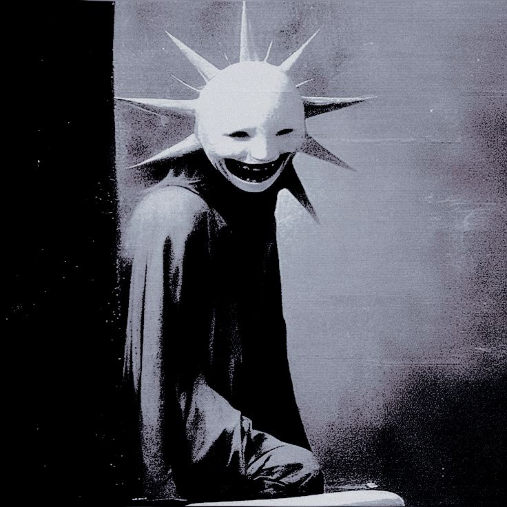
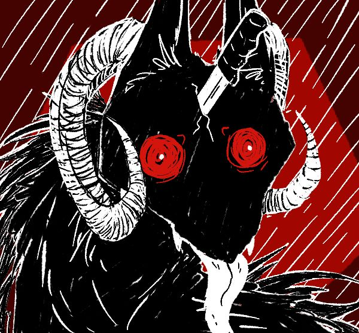
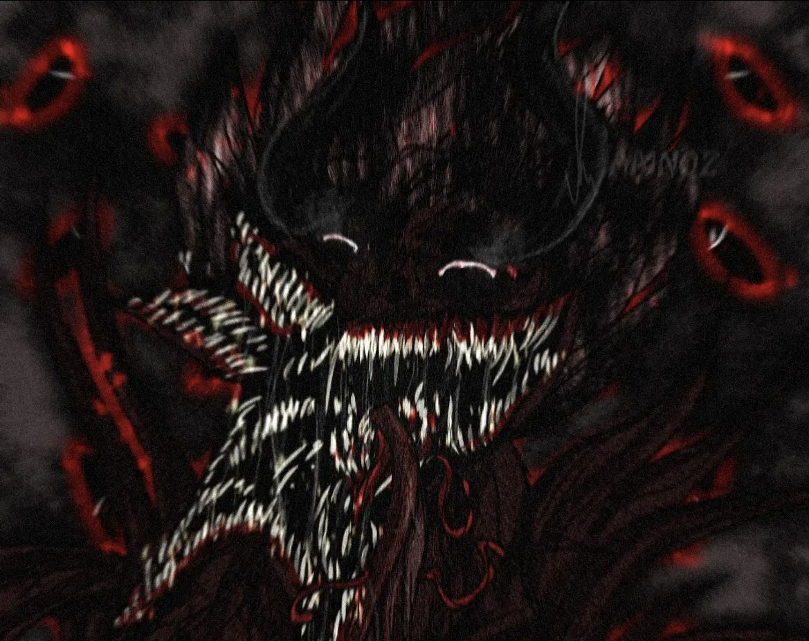
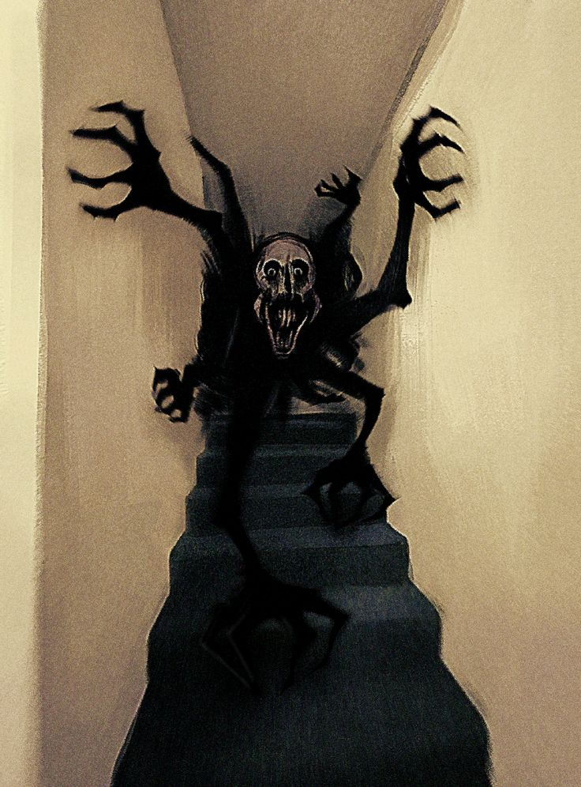

Registro de alterações no banco de dados do Protocolo.
"Se este site desaparecer amanhã, você já sabe o que aconteceu. Não procure por nós. Nós procuraremos vocês, se for o caso."
Bem-vindos ao site oficial do Protocolo Paranormal! Este site tratará de pesquisas acerca das E.C.C. que assolam
o plano terreno até o momento.
Abaixo, o banco de dados de possíveis E.C.C. catalogadas:

Classe: Criatura
O sorriso que imita a estrutura de um sol. Não necessita de mito para se manifestar.

Classe: Conceito
Habita os limiares entre o sono e a vigília. Ele simplesmente te espera dormir.

Classe: Entidade
Manifestada a partir de lendas rurais. Seus olhos são espirais hipnóticas.

Classe: Entidade
O Amigo Imaginário. Aparece para crianças. Sorri com dezenas de dentes afiados.
Apesar de não termos nenhuma evidência concreta.
E.C.C. é uma abreviação para o que chamamos de Entidade-Conceito-Criatura. Ambas estas diferem entre si, apesar
de sua incontestável semelhança - se manifestando em nossa realidade através do Medo.
A única diferença notável entre Entidade e Criatura, com o nosso conhecimento, é o objeto de Medo responsável pela manifestação destas, ou seja:
A Criatura se manifesta sem necessitar de um objeto de Medo enquanto, a Entidade, se manifesta frequentemente através de Mitos - sendo estes, o seu objeto de Medo.
Por fim, um Conceito se trata mais de uma regra que precisa ser seguida até pelo próprio universo, uma afirmação que não pode ser negada e um contexto que sempre está presente - Um Axioma.
"Entidade ou Criatura...? A diferença é sutíl. A Criatura não precisa de motivo pra existir, basicamente. Já a Entidade sempre vai nascer de Mitos; histórias e lendas que passamos como tradição de geração em geração."
"Tudo isso se difere de um Conceito que, desde o princípio, já existiu e não tem como desaparecer."
Um dos nossos estudos mais recentes afim de descobrir mais sobre as E.C.C. está sendo realizado com base em um Afetado - Afetado, para fins
intelectuais, é o nome que damos a um ser humano ou animal que tenha tido contato com um possível E.C.C.
Enfim. Afetados, normalmente, não são seres agressivos e muito menos malignos. Na verdade, a maioria é totalmente
o oposto e, de forma geral, amigável. A maioria possui cicatrizes paranormais irreversíveis e, por isso, podem acabar sendo agressivos (em casos muito específicos).
Pequena Dica: Se você já encontrou um Afetado alguma vez, fique atento! As E.C.C. costumam se aproveitar de quem se envolve com seus possessos. Entre em contato com uma autoridade competente ou conosco o mais rápido possível.
Se você presenciou algo anormal ou deseja relatar um avistamento, entre em contato.
AVISO DO SISTEMA: Este arquivo está em constante expansão. Novas atualizações, dossiês e relatos serão adicionados conforme o tempo for passando. Fique atento. O Protocolo nunca para de observar.